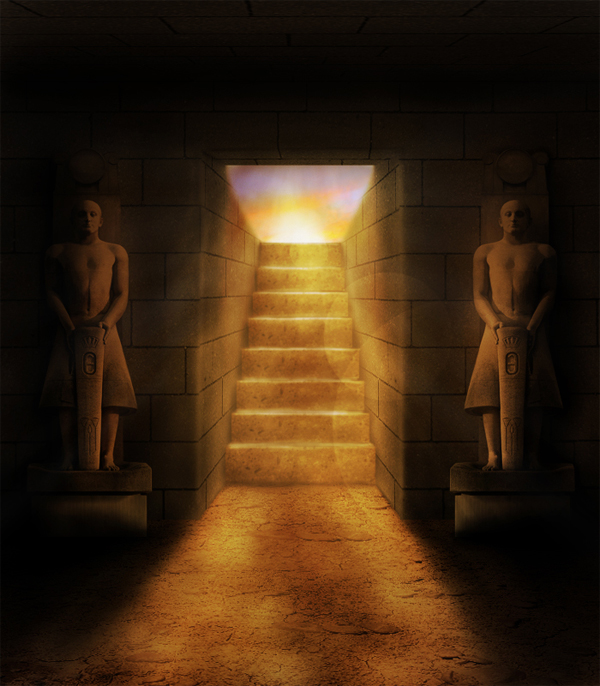

The king praised you for your excellent work, and sent you on your way. You hurry to the gravesite, where your workmen begin to remove the remaining funerary equipment from the grave.
The new "tomb" you have designed is right beside the passage leading from the king's funerary temple to his still-unfinished pyramid at Giza. Hundreds of feet will soon pass it by.
Two night later, you lead the Horus to the new gravesite. By the flickering light of torches, he can barely see the edge of the tomb. He asks what you have done to better protect his mother.
